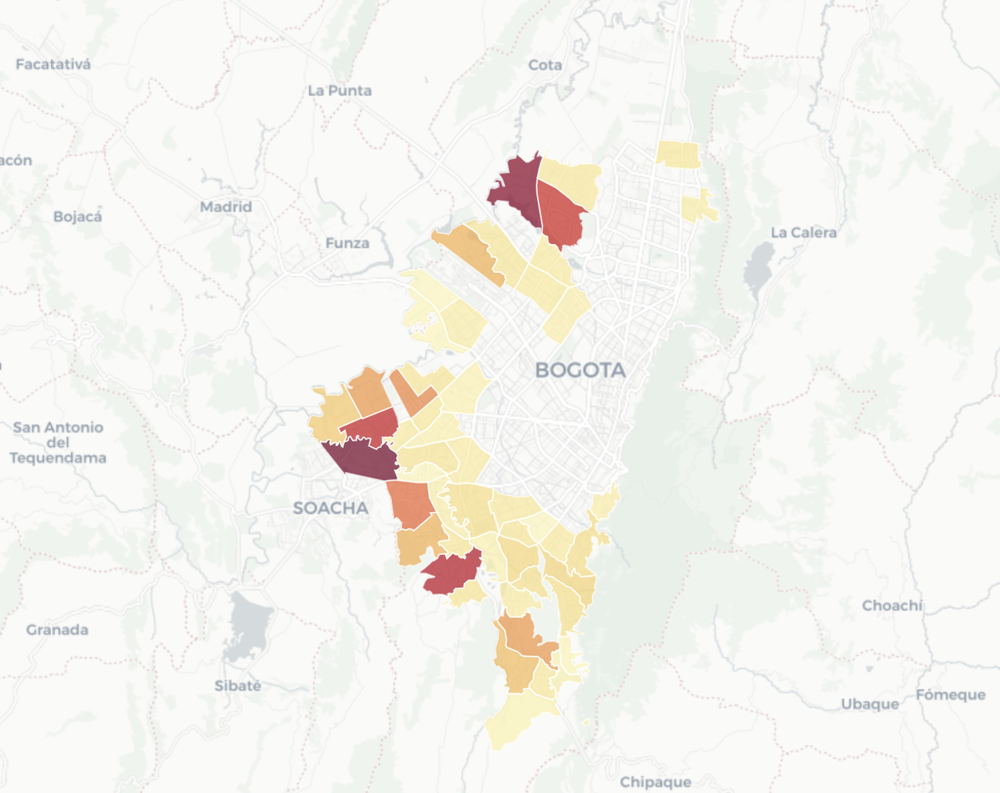

Prioritization dashboard for youth programs in Bogota
Developed to support social program allocation at the District Secretariat of Social Integration. Identifies localities with the highest concentration of vulnerable youth based on SISBEN 2024 data and compares needs across territories.